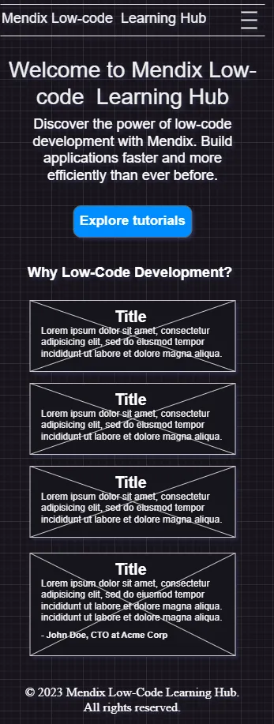
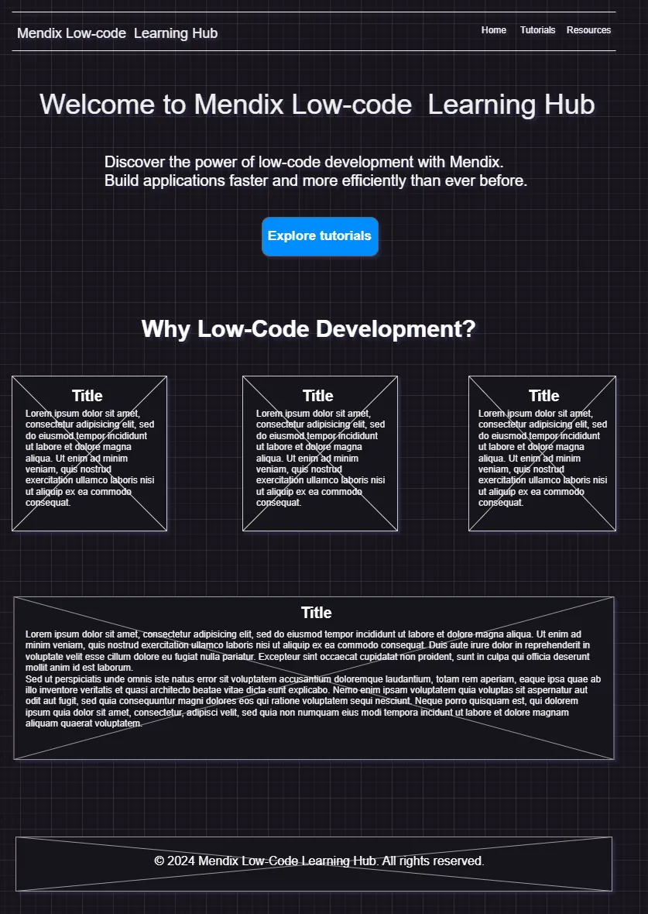

Name: Mendix Low-Code Learning Hub
Reason for Selection: This name effectively communicates the site's purpose: to serve as a hub for learning and resources focused on Mendix, a low-code development platform.
Optional Domain Availability: mendixhub.org
The purpose of this site is to provide a comprehensive learning platform for individuals and organizations interested in low-code development using Mendix. The site will include tutorials, resources, and tools to help users start building applications effectively. It will also offer information about the benefits of low-code development and case studies of successful projects.
| Primary Color | Secondary Color | Accent Color |
|---|---|---|
| #004AAD | #F4F4F4 | #FF9900 |

